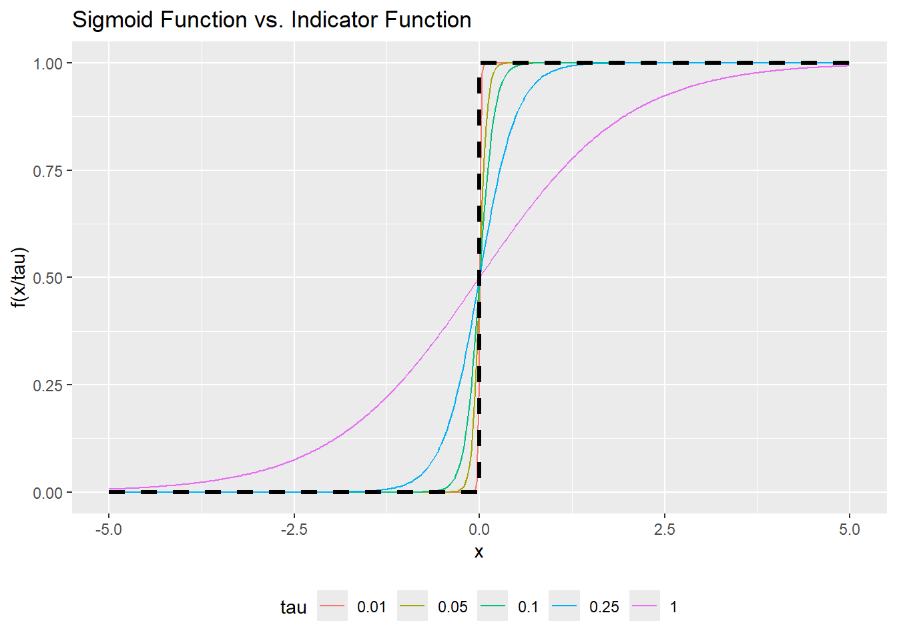

library(mlbench) # contains the breast cancer dataset for use as an example
library(PRROC) # to calculate the area under the precision-recall curve
library(pROC) # to calculate the area under the receiver operating characteristic curve
library(ggplot2) # to draw chartsPR-AUC Optimization
Estimating a logistic regression model using a surrogate for the area under the precision-recall curve (PR-AUC) as the loss function
Intro/Overview
In binary classification tasks, the area under the precision-recall curve (PR-AUC) is a popular metric for use cases that deal with imbalanced data. For example, when trying to predict rare events such as credit defaults, hazard occurrences, correct top search results, etc.
A common approach is to estimate a model using logistic regression and then choose from a few candidate models based on their performance on metrics such as PR-AUC. While there is nothing stopping the user from doing this, logistic regression optimizes its coefficients based on minimizing the logistic loss function, not maximizing PR-AUC. If the objective of the problem is to maximize PR-AUC, optimizing the estimation approach to maximize this quantity directly should provide better results than optimizing a completely different metric.
The trouble with doing this for PR-AUC (and ROC-AUC too for that matter) is that these metrics are defined using indicator functions \(1[s_i \gt s_j]\) which are not smooth and therefore not differentiable. One way around this is to use smooth surrogates to approximate these functions and make them differentiable. We will explore how this can be done as an example.
Setting Up
Loading Libraries
Loading Data
For this example we can use any data as long as we have a binary target variable. We will use the breast cancer dataset, which originates from the Breast Cancer Wisconsin (Diagnostic) Data Set, a widely used benchmark in machine learning for medical diagnostics. We want to build a classifier to predict whether the tumor type is benign or malignant.
# Load the breast cancer dataset from the mlbench package
data("BreastCancer")
# Remove rows with missing values
BC_clean <- na.omit(BreastCancer)
# Convert ordered factors to character, then to numeric to preserve their order
# since they are being fed to model.matrix later
idx_col <- colnames(BC_clean) %in% c("Cl.thickness", "Cell.size", "Cell.shape", "Marg.adhesion", "Epith.c.size")
BC_clean[, idx_col] <- apply(BC_clean[, idx_col], 2, function(x){as.numeric(as.character(x))})
y <- ifelse(BC_clean$Class == "malignant", 1, 0)
X0 <- model.matrix(Class ~ . -1 -Id, data = BC_clean)
X <- cbind(Intercept = 1, X0) # add intercept
n <- nrow(X)
if (length(unique(y)) < 2) stop("Need both classes present.")Utility Functions
Defining functions for the sigmoid (to use in our smooth surrogate), calculations for PR-AUC and ROC-AUC, as well as to help with stratified sampling.
sigmoid <- function(z) {1 / (1 + exp(-z))}
# PR-AUC helper (higher score = more positive)
pr_auc <- function(scores, y) {
pos <- scores[y == 1]
neg <- scores[y == 0]
pr.curve(scores.class0 = pos, scores.class1 = neg, curve = FALSE)$auc.integral
}
roc_auc <- function(scores, y) {
as.numeric(pROC::auc(pROC::roc(response = y, predictor = scores, quiet = TRUE)))
}
# borrowed this from createDataPartition.R in the caret package
# modified to remove dependency on 'dlply' function from plyr package
createDataPartition <- function (y, times = 1, p = 0.5, list = TRUE, groups = min(5, length(y))){
out <- vector(mode = "list", times)
if(length(y) < 2) stop("y must have at least 2 data points")
if(groups < 2) groups <- 2
if(is.numeric(y)) {
y <- cut(y,
unique(quantile(y, probs = seq(0, 1, length.out = groups))),
include.lowest = TRUE)
} else {
xtab <- table(y)
if(any(xtab == 0)) {
warning(paste("Some classes have no records (",
paste(names(xtab)[xtab == 0], sep = "", collapse = ", "),
") and these will be ignored"))
y <- factor(as.character(y))
}
if(any(xtab == 1)) {
warning(paste("Some classes have a single record (",
paste(names(xtab)[xtab == 1], sep = "", collapse = ", "),
") and these will be selected for the sample"))
}
}
subsample <- function(dat, p) {
if(nrow(dat) == 1) {
out <- dat$index
} else {
num <- ceiling(nrow(dat) * p)
out <- sample(dat$index, size = num)
}
out
}
prettySeq <- function(x) {
x <- as.character(x)
for(i in seq(along = x)) {
if(nchar(x[i]) == 1) {
x[i] <- paste("Rep", x[i], sep = "")
} else {
x[i] <- paste("Rep", x[i], sep = "")
}
}
x
}
for (j in 1:times) {
data_frame <- data.frame(y = y, index = seq(along.with = y))
# Split the data frame by the 'y' column
split_data <- split(data_frame, data_frame$y)
# Apply the subsample function to each split using lapply
tmp <- lapply(split_data, subsample, p = p)
tmp <- sort(as.vector(unlist(tmp)))
out[[j]] <- tmp
}
if (!list) {
out <- matrix(unlist(out), ncol = times)
colnames(out) <- prettySeq(1:ncol(out))
} else {
names(out) <- prettySeq(out)
}
out
}Smooth Average Precision
We want to optimize PR-AUC, which is the area under the precision-recall curve. PR-AUC is defined as follows:
\[ \text{PR-AUC} = \int_0^1 \text{Precision}(r) dr \]
where \(r\) is recall.
This is an expectation over all recall levels, i.e. it measures how many positives are captured at varying thresholds relative to false positives.
Given finite data, Average Precision (AP) is defined as:
\[ \text{AP} = \frac{1}{n_+} \sum_{k=1}^{n_+} \text{Precision}(k) \]
where \(n_+\) is the number of positive observations.
The sum runs over the ranked list, and at each position \(k\), you evaluate the precision at the point where a positive is encountered. Intuitively, AP averages the precision achieved each time a new positive is recalled.
PR-AUC integrates precision over recall, i.e. over all possible “fractions of positives recalled.” AP computes precision at discrete recall increments of \(\frac{1}{n_+}\) so AP is basically a Riemann sum estimator of PR-AUC with grid spacing of \(\frac{1}{n_+}\).
\[ \text{PR-AUC} \approx \frac{1}{n_+} \sum_{k=1}^{n_+} \text{Precision}(\frac{k}{n_+}) = \text{AP} \]
Gradient Calculation
Our objective function we want to maximize is AP, so we need to find the gradient by taking the derivative with respect to the model parameters. Our model takes the form of a logistic regression, so the model scores \(s_i\) are \(x_i^TB\).
Let:
\[ \begin{aligned} C_{ij} &= \sigma(\frac{s_j - s_i}{\tau}) \\ r_i &= 1 + \sum_j C_{ij} \\ r_i^+ &= 1 + \sum_{j:y_j=1} C_{ij} \\ prec_i &= \frac{r_i^+}{r_i} \\ AP &= \frac{1}{n^+} \sum_{i:y_i=1} prec_i \end{aligned} \]
We need to apply the chain rule a few times here, but the way we wrote out the terms separately above helps make that easier to see. We will take the derivative with respect to the model score for an example data point, since it’s easier to think about the pairwise comparisons that way, and the model parameters are straightforward after that. One helpful first step is to remember that the derivative of the sigmoid function is well known: \(\sigma'(x) = \sigma(x)(1 - \sigma(x))\). I’ll spell out the derivation here anyway.
Since \(\sigma(x) = \frac{1}{1 + e^{-x}}\), by the quotient rule:
\[ \begin{aligned} \frac{d\sigma}{dx} &= \frac{(0)(1 + e^{-x}) - (1)(-e^{-x})}{(1 + e^{-x})^2} \\ &= \frac{e^{-x}}{(1 + e^{-x})^2} \\ &= \frac{1}{(1 + e^{-x})} \frac{e^{-x}}{(1 + e^{-x})} \\ &= \sigma(x)(1 - \sigma(x)) \end{aligned} \]
By this logic, we will define:
\[ G_{ij} = C_{ij}(1 - C_{ij}) / \tau \]
which is basically just the derivative of the pairwise comparison term \(C_{ij}\) with respect to the model score. With that additional definition, we can write the derivatives more simply as follows:
\[ \begin{aligned} \frac{dAP}{ds_k} &= \frac{1}{n^+} \sum_{i:y_i=1} \frac{dprec_i}{ds_k} \\ \frac{dprec_i}{ds_k} &= \frac{r_i \frac{dr_i^+}{ds_k} - r_i^+ \frac{dr_i}{ds_k} }{r_i^2} \\ \frac{dr_i}{ds_k} &= \begin{cases} -\sum_j G_{ij}, & k=i \\ G_{ik}, & k \ne i \end{cases} \\ \frac{dr_i^+}{ds_k} &= \begin{cases} -\sum_{j:y_j=1} G_{ij}, & k=i \\ G_{ik}1[y_k=1], & k \ne i \end{cases} \\ \end{aligned} \]
Finally, remember that \(s_i = x_i^TB\) so \(\frac{ds_k}{dB} = x_k\) and so \(\frac{dAP}{dB} = \frac{dAP}{ds_k} \frac{ds_k}{dB} = \frac{dAP}{ds_k}x_k\).
That all gets plugged together into the formula for calculating the gradient below.
# SmoothAP:
# C_ij = sigma((s_j - s_i)/tau), r_i = 1 + sum_j C_ij
# r^+_i = 1 + sum_{j:y_j=1} C_ij, precision_i = r^+_i / r_i
# SmoothAP = (1/P) * sum_{i:y_i=1} precision_i
smoothap_loss_grad <- function(X, y, beta, tau = 0.05, lambda = 0.0, reg_intercept = FALSE) {
n <- nrow(X)
s <- as.numeric(X %*% beta)
pos_idx <- which(y == 1)
P <- length(pos_idx)
Sdiff <- outer(s, s, function(si, sj) (sj - si) / tau)
diag(Sdiff) <- 0
C <- sigmoid(Sdiff)
G <- C * (1 - C) / tau
diag(G) <- 0
r <- 1 + rowSums(C)
rp <- 1 + rowSums(C[ , y == 1, drop = FALSE])
prec <- rp / r
smoothAP <- mean(prec[pos_idx])
pos_mask <- as.integer(y == 1)
dL_ds <- numeric(n)
for (i in pos_idx) {
Gi <- G[i, ]
sumGi_all <- sum(Gi)
sumGi_pos <- sum(Gi * pos_mask)
base_vec <- ( r[i] * (Gi * pos_mask) - rp[i] * Gi ) / (r[i]^2)
diag_term <- ( r[i] * (-sumGi_pos) - rp[i] * (-sumGi_all) ) / (r[i]^2)
contrib <- base_vec
contrib[i] <- contrib[i] + diag_term
dL_ds <- dL_ds + (1 / P) * contrib
}
grad_beta <- as.numeric(crossprod(X, dL_ds))
penalty <- 0
if (lambda > 0) {
if (reg_intercept) {
grad_beta <- grad_beta - lambda * beta
penalty <- (lambda / 2) * sum(beta^2)
} else {
mask <- c(0, rep(1, length(beta) - 1))
grad_beta <- grad_beta - lambda * (beta * mask)
penalty <- (lambda / 2) * sum(beta[-1]^2)
}
}
list(loss = smoothAP - penalty, grad = grad_beta, smoothAP = smoothAP)
}Sigmoid for Smoothing
In the gradient calculation above, we used the term \(C_{ij} = \sigma(\frac{s_j - s_i}{\tau})\) which is where the smooth approximation was being made. This replaces what would otherwise have been a non-differentiable indicator function, also known as the Heaviside step function \(1[s_j \gt s_i]\). Here is a plot showing how the sigmoid function we are using approximates this indicator function, where the \(\tau\) parameter introduces more smoothness into the approximation, and hence more error as well. The degree of smoothness that is useful for the estimation process becomes a hyperparameter that needs to be tuned as part of the model fitting process.
# Create a data frame for the sigmoid function
x_sigmoid <- rep(seq(-5, 5, length.out = 400), times = 5)
tau_sigmoid <- rep(c(0.01, 0.05, 0.10, 0.25, 1), each = 400)
df_sigmoid <- data.frame(
x = x_sigmoid,
tau = tau_sigmoid,
y = sigmoid(x_sigmoid/tau_sigmoid)
)
df_sigmoid$tau = as.factor(df_sigmoid$tau)
# Create a data frame for the indicator function
x_indicator <- c(-5, 0, 0, 5)
y_indicator <- c(0, 0, 1, 1)
df_indicator <- data.frame(
x = x_indicator,
y = y_indicator
)
# Create the plot
ggplot() +
# Add the sigmoid curve
geom_line(data = df_sigmoid, aes(x = x, y = y, color = tau)) +
# Add the indicator function
geom_line(data = df_indicator, aes(x = x, y = y), color = "black", linetype = "dashed", lwd = 1.2) +
# Set the labels and title
labs(
title = "Sigmoid Function vs. Indicator Function",
x = "x",
y = "f(x/tau)"
) +
theme(legend.position = "bottom")
Gradient Ascent
We prepared the function to calculate the gradient above, so next we need to use it to build the optimization function. We are maximizing the objective function, so we are adding the gradient contribution to our parameters at each step of the calculation.
We will implement this two ways. One is a batch gradient ascent optimization which computes the gradient over the full training data at each step. This is the cleanest way to do it, but problems can arise if the training data becomes very large because this requires us to compute pairwise metrics so the computation grows exponentially as \(n^2\). An alternative approach for use with larger datasets is a minibatch method, which is basically doing the same thing, but sampling from the training data at each gradient update step so that the update is still representative of the training data but is not so large anymore.
fit_smoothap_batch <- function(X, y, tau = 0.05, lambda = 0.01, reg_intercept = FALSE,
lr = 0.5, decay = 0.95, epochs = 2000, tol = 1e-7, verbose = FALSE) {
beta <- rep(0, ncol(X))
for (ep in 1:epochs) {
out <- smoothap_loss_grad(X, y, beta, tau, lambda, reg_intercept)
beta_new <- beta + lr * out$grad
step_norm <- sqrt(sum((beta_new - beta)^2))
beta <- beta_new
if (verbose && (ep %% 100 == 0 || ep == 1)) {
cat(sprintf("Batch ep=%4d | SmoothAP=%.4f | step=%.3e | lr=%.3g\n",
ep, out$smoothAP, step_norm, lr))
}
if (step_norm < tol) {
if (verbose) cat(sprintf("Batch converged at ep=%d\n", ep))
break
}
lr <- lr * decay
}
beta
}
fit_smoothap_minibatch <- function(X, y, tau = 0.05, lambda = 0.01, reg_intercept = FALSE,
lr = 0.1, decay = 0.99, epochs = 4000, batch_size = 16,
tol = 1e-7, verbose = FALSE) {
beta <- rep(0, ncol(X))
n <- nrow(X)
for (t in 1:epochs) {
#idx <- sort(sample.int(n, min(batch_size, n)))
idx <- createDataPartition(y, p = min(batch_size, n)/n)[[1]]
Xb <- X[idx, , drop = FALSE]; yb <- y[idx]
if (!any(yb == 1) || !any(yb == 0)) next
out <- smoothap_loss_grad(Xb, yb, beta, tau, lambda, reg_intercept)
beta_new <- beta + lr * out$grad
step_norm <- sqrt(sum((beta_new - beta)^2))
beta <- beta_new
if (verbose && (t %% 250 == 0 || t == 1)) {
full <- smoothap_loss_grad(X, y, beta, tau, lambda, reg_intercept)
cat(sprintf("Mini it=%5d | SmoothAP(full)=%.4f | step=%.3e | lr=%.3g\n",
t, full$smoothAP, step_norm, lr))
}
if (step_norm < tol) {
if (verbose) cat(sprintf("Mini converged at it=%d\n", t))
break
}
lr <- lr * decay
}
beta
}Testing Performance
Now that we have the estimation functions built, we can try tuning the custom model on some example data and then comparing the performance with a traditional logistic regression.
Data Processing
We split the data into 60/20/20 train/validation/test. We use performance on the validation set to tune the hyperparameters (tau, learning rate, etc.) for our custom models, then fit all the models on the train and validation data and measure performance on the test set.
# Create train, validation, and test splits
set.seed(42)
spl <- createDataPartition(as.factor(y), p = 0.6)
idx_train <- spl[[1]]
Xtr <- X[idx_train, , drop = FALSE]; ytr <- y[idx_train]
y_temp <- y[-idx_train]
X_temp <- X[-idx_train, , drop = FALSE]
spl <- createDataPartition(as.factor(y_temp), p = 0.5)
idx_val <- spl[[1]]
Xva <- X_temp[idx_val, , drop = FALSE]; yva <- y_temp[idx_val]
Xte <- X_temp[-idx_val, , drop = FALSE]; yte <- y_temp[-idx_val]Hyperparameter Tuning
We select a few hyperparameters to test and then use grid search to find the combination that performs best over the validation set.
# Create hyperparameter grids
grid_batch <- expand.grid(
tau = c(0.01, 0.05, 0.10),
lambda = c(0.00, 0.01, 0.10),
lr = c(0.2, 0.1, 0.05),
decay = c(0.99, 0.95, 0.90),
KEEP.OUT.ATTRS = FALSE
)
grid_mini <- expand.grid(
tau = c(0.01, 0.05, 0.10),
lambda = c(0.00, 0.01, 0.10),
lr = c(0.2, 0.1, 0.05),
decay = c(0.99, 0.95, 0.90),
batch = c(16, 32),
KEEP.OUT.ATTRS = FALSE
)
eval_on_val <- function(beta, Xva, yva) {
# Scores are linear for ranking; no outer sigmoid
sc_va <- as.numeric(Xva %*% beta)
pr_auc(sc_va, yva)
}
# Batch SmoothAP tuning
best_b <- NULL; best_b_prauc <- -Inf
for (k in seq_len(nrow(grid_batch))) {
g <- grid_batch[k, ]
beta_k <- fit_smoothap_batch(Xtr, ytr,
tau = g$tau, lambda = g$lambda,
lr = g$lr, decay = g$decay,
epochs = 1500, tol = 1e-6, verbose = FALSE)
score <- eval_on_val(beta_k, Xva, yva)
if (score > best_b_prauc) { best_b_prauc <- score; best_b <- list(params = g, beta = beta_k) }
}
cat(sprintf("Best batch SmoothAP val PR-AUC = %.4f with params: %s\n",
best_b_prauc, paste(names(best_b$params), unlist(best_b$params), sep="=", collapse=", ")))Best batch SmoothAP val PR-AUC = 0.9848 with params: tau=0.1, lambda=0.1, lr=0.2, decay=0.99# Mini-batch SmoothAP tuning
best_m <- NULL; best_m_prauc <- -Inf
for (k in seq_len(nrow(grid_mini))) {
g <- grid_mini[k, ]
beta_k <- fit_smoothap_minibatch(Xtr, ytr,
tau = g$tau, lambda = g$lambda,
lr = g$lr, decay = g$decay,
epochs = 2500, batch_size = g$batch,
tol = 1e-6, verbose = FALSE)
score <- eval_on_val(beta_k, Xva, yva)
if (score > best_m_prauc) { best_m_prauc <- score; best_m <- list(params = g, beta = beta_k) }
}
cat(sprintf("Best mini SmoothAP val PR-AUC = %.4f with params: %s\n",
best_m_prauc, paste(names(best_m$params), unlist(best_m$params), sep="=", collapse=", ")))Best mini SmoothAP val PR-AUC = 0.9870 with params: tau=0.1, lambda=0, lr=0.1, decay=0.95, batch=16It looks like a faster learning rate and less learning rate decay is best here. The optimal choice for tau is less than 1 but also greater than 0.01 so some smoothness is useful. Since several of these values are at the edge of the grid we could probably find better hyperparameter combinations if we expanded the grid and continued testing, but since this is just a toy example we will stop here.
Test Set Performance
Now we apply the best hyperparameters we found in the tuning step above and fit the models on the training and validation data.
# Re-fit models on Train+Val data
Xtrva <- rbind(Xtr, Xva)
ytrva <- c(ytr, yva)
beta_batch <- fit_smoothap_batch(Xtrva, ytrva,
tau = best_b$params$tau,
lambda= best_b$params$lambda,
lr = best_b$params$lr,
decay = best_b$params$decay,
epochs= 3000, tol = 1e-7, verbose = FALSE)
beta_mini <- fit_smoothap_minibatch(Xtrva, ytrva,
tau = best_m$params$tau,
lambda= best_m$params$lambda,
lr = best_m$params$lr,
decay = best_m$params$decay,
epochs= 4000, batch_size = best_m$params$batch,
tol = 1e-7, verbose = FALSE)
# Baseline logistic (trained on train+val)
glm_fit <- glm(ytrva ~ ., data = data.frame(ytrva = ytrva, Xtrva[ , -1, drop = FALSE]),
family = binomial())
# Get model scores
sc_batch <- as.numeric(Xte %*% beta_batch)
sc_mini <- as.numeric(Xte %*% beta_mini)
sc_glm <- as.numeric(predict(glm_fit, newdata = data.frame(Xte[ , -1, drop = FALSE]),
type = "link"))
# Performance Metrics on the test data
res_test <- data.frame(
method = c("Logistic (MLE)", "SmoothAP (batch)", "SmoothAP (mini)"),
PR_AUC = c(pr_auc(sc_glm, yte), pr_auc(sc_batch, yte), pr_auc(sc_mini, yte)),
ROC_AUC = c(roc_auc(sc_glm, yte), roc_auc(sc_batch, yte), roc_auc(sc_mini, yte))
)
knitr::kable(res_test)| method | PR_AUC | ROC_AUC |
|---|---|---|
| Logistic (MLE) | 0.9746975 | 0.9792070 |
| SmoothAP (batch) | 0.9927899 | 0.9963733 |
| SmoothAP (mini) | 0.9934036 | 0.9966151 |
# Stratified bootstrap CIs for PR-AUC or ROC-AUC
boot_ci <- function(scores, y, B = 1000, metric = c("pr", "roc")) {
metric <- match.arg(metric)
n <- length(y)
pos_idx <- which(y == 1)
neg_idx <- which(y == 0)
npos <- length(pos_idx)
nneg <- length(neg_idx)
vals <- numeric(B)
for (b in seq_len(B)) {
# sample positives and negatives separately (with replacement)
samp_pos <- sample(pos_idx, npos, replace = TRUE)
samp_neg <- sample(neg_idx, nneg, replace = TRUE)
idx <- c(samp_pos, samp_neg)
scb <- scores[idx]
yb <- y[idx]
vals[b] <- if (metric == "pr") pr_auc(scb, yb) else roc_auc(scb, yb)
}
stats::quantile(vals, c(0.025, 0.975))
}
B <- 1000 # reduce if runtime is a concern
ci_tbl <- function(name, scores, y) {
c(PR_L = boot_ci(scores, y, B, "pr")[1],
PR_U = boot_ci(scores, y, B, "pr")[2],
ROC_L= boot_ci(scores, y, B, "roc")[1],
ROC_U= boot_ci(scores, y, B, "roc")[2])
}
cis <- rbind(
c(method = "Logistic (MLE)", ci_tbl("glm", sc_glm, yte)),
c(method = "SmoothAP (batch)",ci_tbl("batch", sc_batch, yte)),
c(method = "SmoothAP (mini)", ci_tbl("mini", sc_mini, yte))
)
cis <- as.data.frame(cis, stringsAsFactors = FALSE)
cis[, -1] <- lapply(cis[, -1], as.numeric)
cat("\nTest-set bootstrap 95% CIs\n")
Test-set bootstrap 95% CIsknitr::kable(cis)| method | PR_L.2.5% | PR_U.97.5% | ROC_L.2.5% | ROC_U.97.5% |
|---|---|---|---|---|
| Logistic (MLE) | 0.9381130 | 1 | 0.9429340 | 0.9995164 |
| SmoothAP (batch) | 0.9787212 | 1 | 0.9896035 | 1.0000000 |
| SmoothAP (mini) | 0.9806356 | 1 | 0.9895974 | 1.0000000 |
We can see that this custom algorithm was able to achieve improved performance on PR-AUC as compared to traditional logistic regression, both when looking at the point estimates for performance as well as confidence intervals for that metric over the test set. The two estimation methods (batch and mini-batch) achieve basically identical performance, which we expect since the mini-batch method is just a way to extend the batch method to be feasible for use with larger datasets.
In addition to better performance on PR-AUC, this custom algorithm also happens to do better on ROC-AUC, which is a related rank-order performance metric.
Conclusion
In this analysis we implement a custom algorithm for estimating a logistic regression using a surrogate for PR-AUC as the objective function in place of the logistic loss function. We see that we are able to achieve improved performance as measured by PR-AUC when we optimize for it directly while estimating the model.